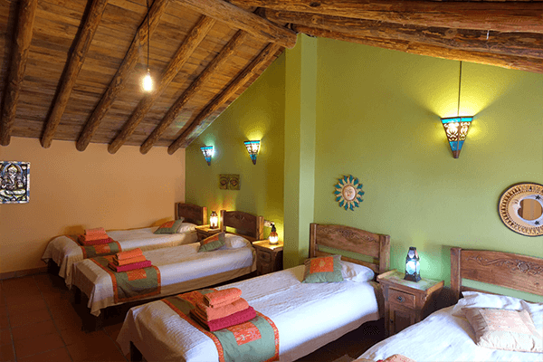
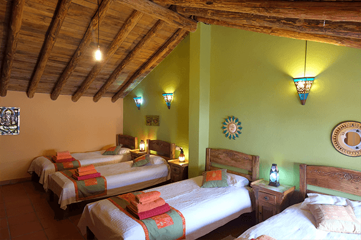
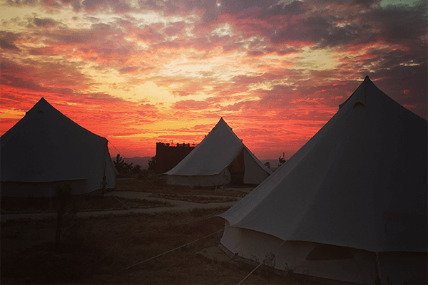
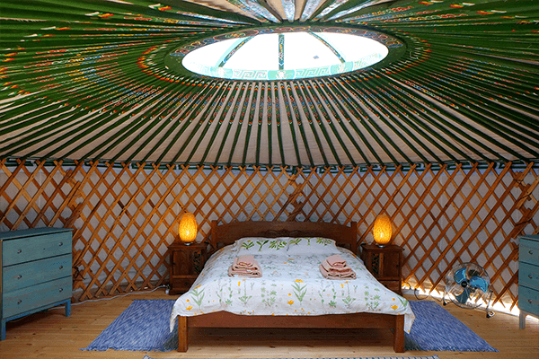
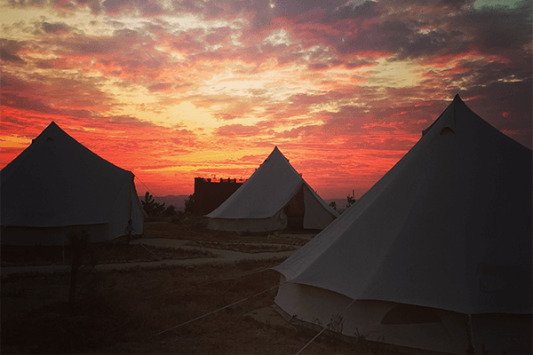
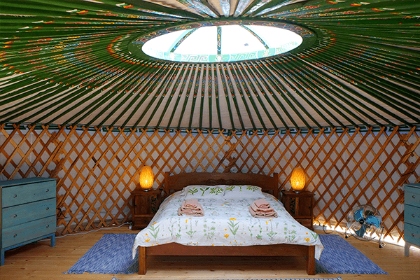

Retreat Costs:
Early Bird prices start at 725€ all inclusive (subject to room availability):
Rooms available include (quotes for other rooms are available on request):
- glamping bell tents (outdoor bathroom facilities, including hot showers)
- yurts (outdoor bathroom facilities, including hot showers)
- eco-casas (outdoor bathroom facilities, including hot showers)
- twin (shared bathroom with one other room)
‍* Early bird discount (10% off) until 21st March 2022
The package includes:
- 5 night's accomodation in beautiful Suryalila Retreat Centre
- 3 delicious freshly-prepared vegetarian/vegan meals
- All your yoga, meditation, and breath-work workshops and props/equipment
- Intuitive dance session, self and partner massage workshops, an excursion to the river for a mindful walk, and more!
- Guidance of two very experienced and loving teachers (Joanna and Catia)
Not includedhttps://suryalila.com/contact/directions/
- Transfers
- Flights
- Added excursions or massages
For questions and bookings:
Email joanna.gilbert123@gmail.com orinfo@gentletouchbycatia.com
Places going fast!

 
 
